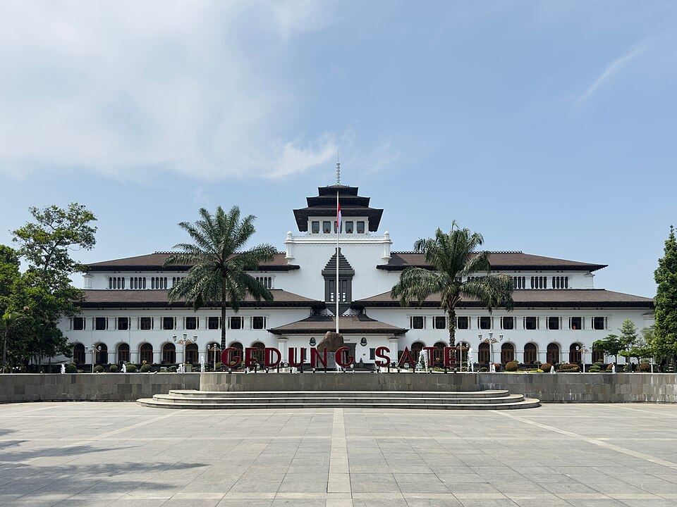

Jawa
Pulau Kaya Budaya, Alam Megah & Warisan Tak Ternilai
6 province
Alam Eksotis
Budaya Beragam
Scroll Ke Bawah
Jelajahi province
Mari Kenali Lebih Dalam Wilayah Jawa
Temukan 6 province menakjubkan yang membentuk keindahan Pulau Jawa

